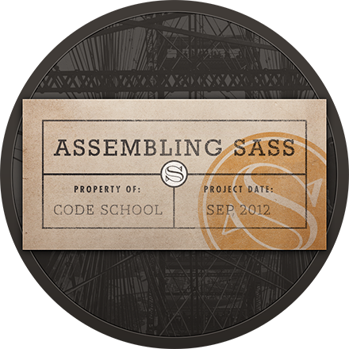

About Me
An accomplished and successful professional with a strong focus on customer service and performance standards. Passionate about IT systems and technology with a keen interest in Web Development using self-taught programming skills. Possesses an impressive skillset and strong commercial acumen acquired during a successful career within a Retail environment. A strategic operator with proven ability and the vision and dedication to drive a business forward, achieving both short term and long term sustainable benefit. Ensures effective and coordinated operations and offers an innovative, creative mind and the commercial acumen to identify and capitalise upon all opportunities. Intelligent with the ability to accept, absorb and apply new information and data effectively coupled with the adaptability to integrate easily into new teams and environments. Conscientious, innovative and ethical with a focused and diligent approach to achieving results.
My Career So Far
- Leading and managing team of 12 personnel, promoting a culture of continual improvement and accountability to achieve a motivated, competent team capable of performing to high standards.
- Ensuring operational efficiency of the store, implementing and improving standardised processes and procedures which improve efficiency and productivity and maximise profits.
- Managing both internal and external stakeholder relationships, forging robust and productive relationships at all levels.
- Diligent management of a £1.6M pay budget, utilising a range of software to coordinate effectively and ensure accurate and timely payment of salaries.
- Undertaking HR responsibilities including recruitment, inductions and performance appraisals, setting in place structured personnel development plans to benefit both individuals, the team and the organisation.
- Coaching non-management partners and managers, identifying training needs and providing support to facilitate development of technical and soft skills.
- Accountable for governance and ensuring trading standards, health and safety and food hygiene compliance.
- Supported the Section Manager to manage a team of 20 employees and ensure the store met due diligence and food hygiene standards while achieving profit targets.
- Other duties included team performance reviews and store maintenance.
- Led a strong team of 30 multi-disciplined staff, coordinating, prioritising and allocating tasks and ensuring the delivery of exceptional levels of customer service, using feedback tools to monitor performance.
- Trained as a soldier and worked as part of a cohesive team, planning and preparing for the eventualities of defending the realm, remaining calm in challenging situations to achieve objectives.
2014-Present Waitrose Kensington 678 Section Manager
2012-2014 Waitrose Westfield 462 Assistant Section Manager
2006-2012 Waitrose Sunningdale 190 Team Leader Operations
2005-2006 HM Forces Army Royal Gloustershire Berkshire and Wiltshire Regiment Infantryman
My Projects
See the Pen FCC-Pomodoro-Clock by James Bint (@khakimonk) on CodePen.
See the Pen FCC Quote-Generator by James Bint (@khakimonk) on CodePen.
See the Pen FCC-Wiki by James Bint (@khakimonk) on CodePen.
See the Pen FCC-Javascript Calculator by James Bint (@khakimonk) on CodePen.
See the Pen FCC WeatherApp by James Bint (@khakimonk) on CodePen.
See the Pen FCC-Twitch-App by James Bint (@khakimonk) on CodePen.
Completed Courses


- 